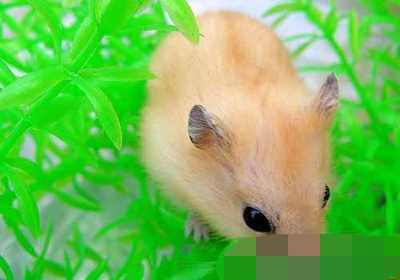
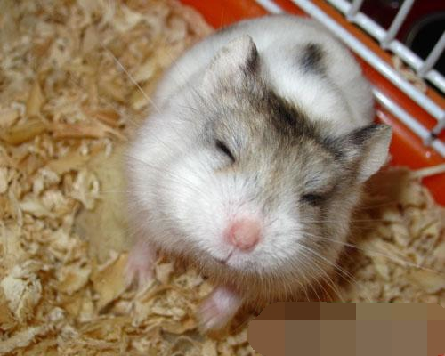
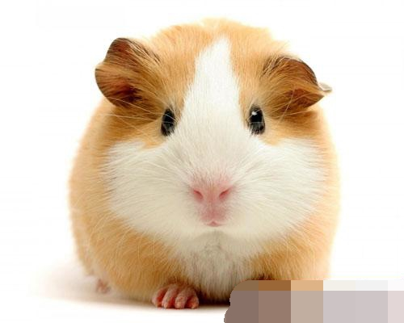

仓鼠患上皮肤病症状及治疗

仓鼠
皮肤病
症状：
皮肤出现红肿及脱毛的情况。
特征：
爱好清洁的仓鼠，每天都会自行冲凉数次。若居住环境潮湿或肮脏，便很容易患上皮肤病或出现甩毛之情况。仓鼠一旦患上皮肤病，整个身体都会布满细菌，幸好这种疾病是不会致命的。
防治方法：
首先必须保持环境清洁及干爽;另外，虽然仓鼠会自行冲凉，但主人都需要经常用冲凉沙替其冲凉;而给它们吃多些有益的食物，是可减少罹患皮肤病之机会的。如发现仓鼠有上述症状出现，可到仓鼠店买喷皮肤水;及改用冲凉药粉。
【仓鼠皮肤病】仓鼠有皮肤病怎么办
仓鼠身体上的皮毛也非常的浓密厚实，这也是细菌滋生繁殖的最佳场所。而细菌真菌的繁殖就会导致仓鼠患上严重的皮肤病，使仓鼠皮毛出现瘙痒红肿的情况，而且严重的会出现掉毛浓重的情况。为此，家长需要及时给仓鼠进行治疗，缓解皮肤患病的情况。

仓鼠的皮肤病主要可以分成四类。如营养性皮肤炎、寄生虫性皮肤炎、过敏性皮肤炎、细菌性皮肤炎。

当仓鼠食用的饲料中所含的蛋白质的比例不到16%，而且又长期单一的使用某一种食物，这样就会导致仓鼠身体营养不良，患上营养性皮肤炎。患病的仓鼠毛发容易脱落，而且脸部、四肢都会有脱毛的情况。此时，家长需要及时的改善仓鼠的食物，准备营养更为丰富的食物，同时需要适当的添加一些维生素、矿物质、蛋白质粉等营养剂在食物中，加强仓鼠营养的攻击，治疗皮肤疾病。
饲养仓鼠有哪些注意事项
一、仓鼠了怀孕但不知道;明知仓鼠怀孕但不分笼;仓鼠生育后打扰母仓鼠;哺乳期内提供食物不足;哺乳期内没有提供面包虫碰触小仓鼠;以上行为可能导致：小仓鼠被母仓鼠吃掉，弑子行为是仓鼠在野外生活遗传下来的一种自我保护意识;母仓鼠弃养!
二、喂食仓鼠人类零食;大量喂食高脂肪类食物(如花生、瓜子等);纵容仓鼠吃肉类;以上行为可能导致：脂肪瘤和肿瘤的滋生，症状表现为在身体的某些部位长出颗粒状大小不等的包，并减短寿命。(这里说明一点，公仓鼠成年后**上长的2个包是蛋蛋，不是肿瘤。)当然有些小包也被认为是上火引起的，所有这些都和主人喂食的食物有很大的关系。
三、水壶内放置生水;水壶长时间不清洗;喂仓鼠的蔬菜带水未弄干;喂食仓鼠吃凉性水果(如梨等)和带水过多的水果;将仓鼠放在水中洗澡;经常给仓鼠变换居住环境;喂仓鼠喝牛奶以上行为可能导致：仓鼠拉稀，严重者湿尾。
四、长时间不给仓鼠沙浴;使用工业木屑当垫料;使用报纸、面纸等垫料;长时间不清理鼠笼;以上行为可能导致：仓鼠皮肤过敏，皮肤病滋生导致不正常的挠痒、脱毛，笼内环境恶劣甚至可能受曲霉菌感染。肮脏的笼舍也容易使仓鼠的眼睛被细菌感染。
五、给仓鼠晒太阳;以上行为可能导致：仓鼠失明，严重者死亡。仓鼠是夜行性动物，眼睛则是只能辨别黑白，它的眼睛的功能有点类似人类的夜视镜，想像一下你戴着夜视镜被人扔一个闪光弹的情景吧。